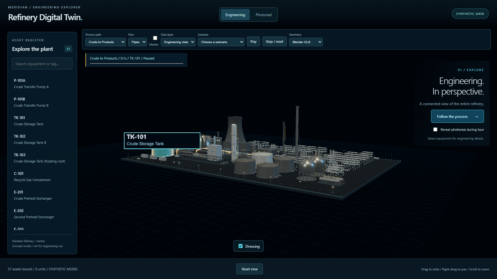

Technical sales
Place your offer in a process story. Give the discussion a clear visual starting point.
Turn a technical conversation into a shared view.
A proposed browser exhibit for [Client].

Place your offer in a process story. Give the discussion a clear visual starting point.
Move from the plant overview to the equipment that matters to your audience.
Invite visitors to explore, then let your team guide the next question.
Proposed applications for a scoped [Client] engagement. No measured sales outcomes are claimed.
Normalized asset IDs, equipment selection and three process paths. Engineering and photoreal day/night views.
A 42-second guided tour, a 60-second attract cycle and a timed, scripted pump-trip sequence.
An interactive synthetic concept model. Not a surveyed facility or an operational system.
Repository still shown. Load the demo to check availability.
Choose a process path in the demo UI. Enter enables its controls; Escape returns to the slides. Model credits: slide 9.
Choose the existing scenario in the demo.
Follow the authored equipment and telemetry states.
Use the sequence as a prompt for your product story.
Scripted explanation, not process simulation. Synthetic values do not establish operational accuracy, predictive maintenance or safety qualification.
Agreed logo, colour treatment and opening message, adapted to the engineering HUD.
Agreed equipment emphasis, concise copy and a guided sales story for one audience.
Proposed deliverables, subject to scope and review. Client-specific branding and narratives are not features already shipped in this demo.
Confirm supplied brand assets, intended claims, content permissions and the chosen demo journey.
Agree devices, browsers, venue connectivity, review rounds and a single client approver.
Approve copy and visuals; verify navigation, target-device rendering and fallback before handover.
Proposed browser-first delivery. Hardware, deployment and event support require an explicit agreement.
Agreed branding, narrative adaptation, browser presentation and acceptance review.
Offline kiosk packaging, real-data onboarding, integrations, custom engineering models and ongoing support.
Choose one audience, one product story and the target device. Confirm the brief before pricing.
No live-data, predictive-maintenance, operational-accuracy or safety-qualified deliverables are included.
All four models below: Creative Commons Attribution 4.0. Used in the demo and represented in the still.
Strifey7 · FBX converted to GLB; grounded, scaled to 6.058 m; textures reduced to 1K; PBR materials assigned.
ezbreneman · grounded and scaled; combined into one material with a 1024² baked albedo atlas.
elkarimeldino · grounded and scaled; combined into one material with a 1024² baked albedo atlas.
ROGUE / ROGUEENGINEER · first yellow cabin selected; grounded and scaled.
Engineering derivatives: textures removed, neutral grey materials, lossless meshopt. Original refinery geometry: project-generated.
Poly Haven · CC0: environment, materials and rocks; textures converted/resized, rock simplified. NASA/NGA/USGS SRTM via OpenTopography: cropped, resampled, horizontally compressed, heights scaled/recentred and plant area flattened. Adapted presentation geography, not a surveyed facility. No endorsement implied.